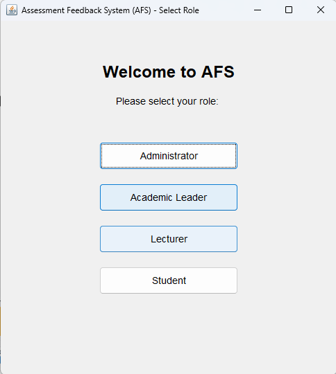
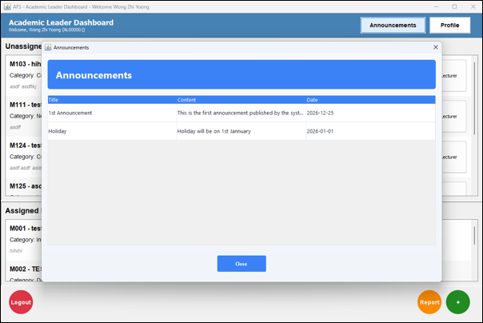

Inside the Application



A Java desktop application covering the full coursework lifecycle at a university — from an academic leader designing an assessment through to a student reading the feedback on their mark — across four distinct roles.
View Source on GitHubCoursework assessment involves more people than it first appears. Somebody has to create the classes and decide the grading scheme, somebody has to be assigned to teach and mark them, students have to enrol and submit, and the feedback has to find its way back to the right person. Handled across spreadsheets and email, those steps drift out of sync almost immediately.
The Assessment Feedback System models that whole chain as one application with four roles. An administrator manages accounts and announcements. An academic leader sets up modules, classes, assessment types and the grading system, then assigns lecturers to modules. Lecturers work through their assigned modules, mark submissions and leave feedback. Students browse available classes, enrol, track deadlines, submit work and read their results.
Each role signs in through its own route and lands on a dashboard scoped to what that role can actually do, so the same underlying records are presented differently depending on who is looking at them.
Manages user accounts and user types, creates classes, defines the grading system, assigns lecturers, and publishes announcements across the platform.
Oversees modules and sees at a glance which are assigned and which are not, assigning lecturers to close the gap.
Works through assigned modules with assessment reminders, grading dialogs, marks entry and a feedback flow back to students.
Browses available classes, enrols, tracks assessment deadlines, submits work, and reviews a results summary alongside lecturer feedback.
Feedback and threaded comments run between lecturers and students, so a mark arrives with the reasoning attached rather than as a bare number.
Marks, grades and submissions feed a reporting view, turning individual records into a picture of how a cohort is performing.


The application is a NetBeans Java project built with Apache Ant, launching
into a role selection screen before authentication. Around sixty classes are
organised along clear lines: entity types such as
User, Module, Class,
Enrollment, Submission, Mark,
Grade, Feedback and Comment; service
classes holding the logic for each; and Swing dialogs and dashboards for the
interface.
There is no database engine. All state persists to fourteen structured text files — users split by role, plus modules, classes, enrolments, marks, grading systems, submissions, comments, reports and announcements — which meant designing a record format and the read, write and parse routines by hand.
Authentication runs through a dedicated service with identifier validation, and each role's controller mediates between its dashboard and the services beneath, keeping interface code separate from the rules it depends on.
Built collaboratively with teammates, each owning part of the system. My share covered the way users get into the application, the academic leader's half of it, and the announcements that reach every role.